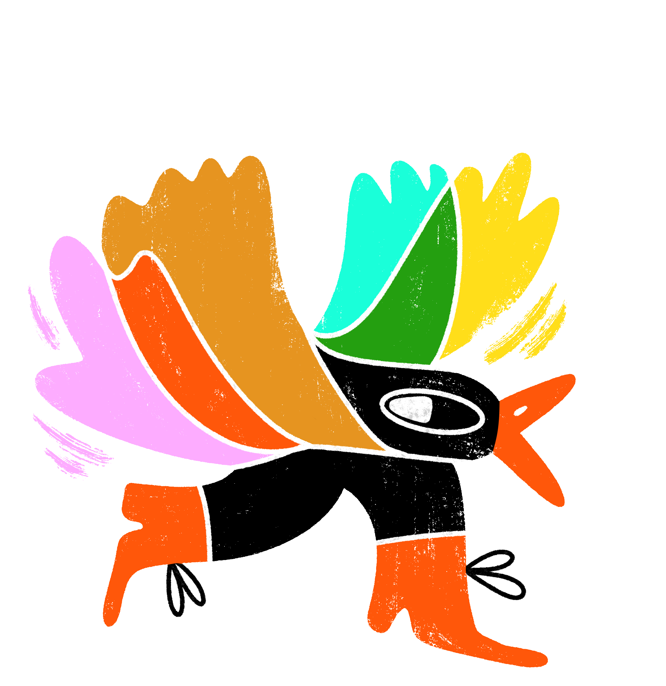
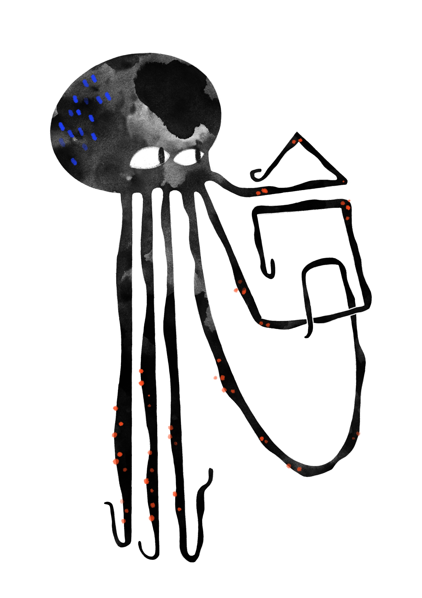
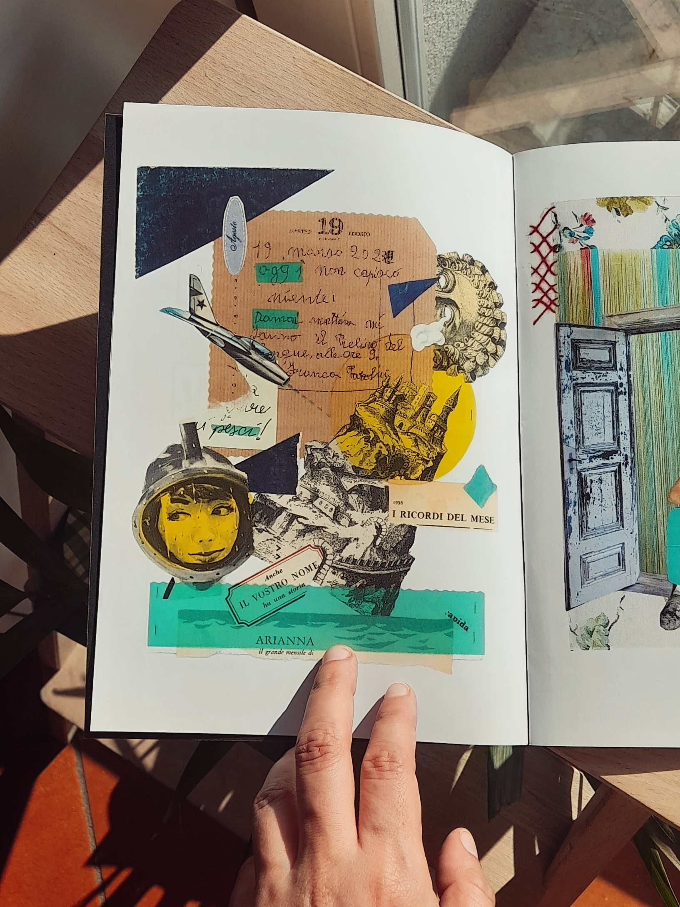
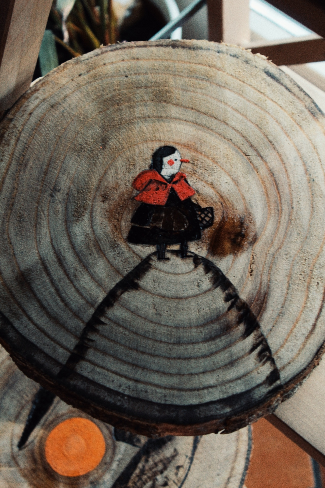

Logo for Tumulto Pride, Verona 2025
Questo è il fiore - cover for The Mantovaner, Mantova 25 aprile 2025

Selected illustration for Segni d'infanzia festival, Mantova 2024
Official illustration for IL MAGGIO DEI LIBRI 2024

MEMORANDUM - artwork for OLTRE magazine 2024
